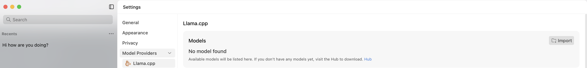
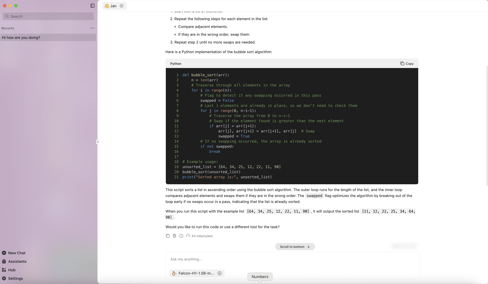

Deployment
This page summarizes all the current available tools that you can use for deploying Falcon-H1 series
Make sure to use Falcon-H1 model in torch.bfloat16 and not torch.float16 for the best performance.
🤗 transformers
We advise users to install Mamba-SSM from our public fork in order to include this fix. Note this is optional as we observed that the issue occurs stochastically.
git clone https://github.com/younesbelkada/mamba.git && cd mamba/ && pip install -e . --no-build-isolation
Check this issue for more details.
Make sure to install transformers library from source:
pip install git+https://github.com/huggingface/transformers.git
And use AutoModelForCausalLM interface, e.g.:
import torch
from transformers import AutoModelForCausalLM, AutoTokenizer
model_id = "tiiuae/Falcon-H1-1B-Base"
model = AutoModelForCausalLM.from_pretrained(
model_id,
torch_dtype=torch.bfloat16,
device_map="auto"
)
# Perform text generation
vLLM
For vLLM, simply start a server by executing the command below:
# pip install vllm
vllm serve tiiuae/Falcon-H1-1B-Instruct --tensor-parallel-size 2 --data-parallel-size 1
💡 Tip: Falcon-H1’s default --max-model-len is 262 144 tokens to support very long contexts, but that large window can slow throughput. Set --max-model-len <prompt_len + output_len> (e.g. 32768) and cap concurrency with --max-num-seqs <N> (e.g. 64) to avoid over-allocating KV-cache memory and speed up generation.
🔧 llama.cpp
Falcon-H1 is natively supported into llama.cpp !
All official GGUF files can be found on our official Hugging Face collection.
1. Prerequisites
- CMake ≥ 3.16
- A C++17-compatible compiler (e.g.,
gcc,clang) - make or ninja build tool
- (Optional) Docker, for OpenWebUI integration
2. Clone & Build
# Clone the Falcon-H1 llama.cpp fork
git clone https://github.com/ggml-org/llama.cpp
cd llama.cpp
# Create a build directory and compile
mkdir build && cd build
cmake .. # Configure the project
make -j$(nproc) # Build the binaries
Tip: For GPU acceleration, refer to the llama.cpp GPU guide.
3. Download a GGUF Model
Fetch the desired Falcon-H1 checkpoint from Hugging Face’s collection:
# Example: download the 1B Instruct model
wget https://huggingface.co/tiiuae/Falcon-H1-1.5B-Instruct-GGUF/resolve/main/Falcon-H1-1.5B-Instruct-Q5_K.gguf \
-P models/
All available GGUF files: https://huggingface.co/collections/tiiuae/falcon-h1-6819f2795bc406da60fab8df
4. Run the llama-server
Start the HTTP server for inference:
./build/bin/llama-server \
-m models/Falcon-H1-1B-Instruct-Q5_0.gguf \
-c 4096 \ # Context window size
--ngl 512 \ # Number of GPU layers (omit if CPU-only)
--temp 0.1 \ # Sampling temperature
--host 0.0.0.0 \ # Bind address
--port 11434 # Listening port
5. Web UI via OpenWebUI
Use the popular OpenWebUI frontend to chat in your browser:
docker run -d \
--name openwebui-test \
-e OPENAI_API_BASE_URL="http://host.docker.internal:11434/v1" \
-p 8888:8888 \
ghcr.io/open-webui/open-webui:main
- Open your browser at http://localhost:8888
- Select Falcon-H1-1B-Instruct-Q5_0 from the model list
- Start chatting!
For advanced tuning and custom flags, see the full llama.cpp documentation: https://github.com/ggerganov/llama.cpp
Demo
We use a MacBook M4 Max Chip and Falcon-H1-1B-Q6_K for this demo.
SkyPilot
Refer to this documentation section for deploying Falcon-H1 series models using Skypilot library.
Lm-studio
First, install lm-studio from the official website - make sure to select the latest llama.cpp runtime by selecting Developer mode -> "LM Runtimes" (from top left) -> Make sure that llama.cpp version is greater than v1.39.0
Jan
Jan is an open source alternative to ChatGPT that runs 100% offline on your computer - it also support H1 models with minimal configuration steps. First make sure to install the version >=0.6.5, then Navigate to Settings -> Model Providers -> Llama.cpp

From there, click on the folder icon to import your own GGUF file and select any H1 GGUF model that you have downloaded locally. After that, switch to the main screen and start chatting with the model !

Docker Model API
Docker supports deploying local models with a simple API, you can use Falcon-H1 with Docker Model API starting from Docker Desktop version 4.43.2.
First make sure to run docker desktop (for Mac devices), then run:
docker model run hf.co/tiiuae/Falcon-H1-1.5B-Instruct-GGUF